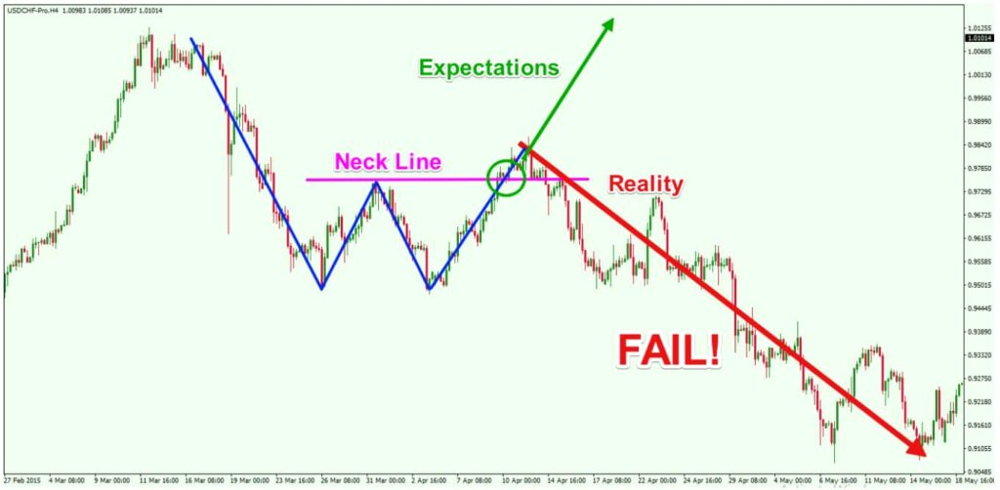
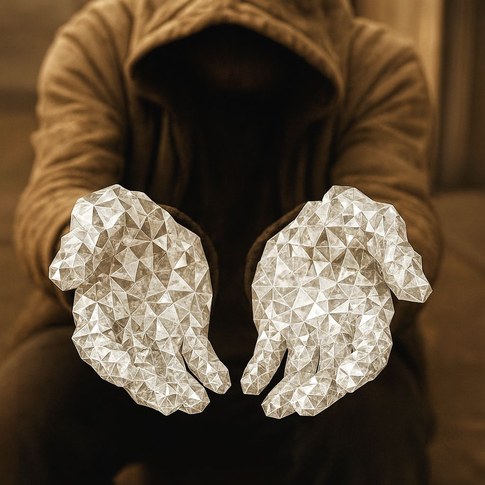

Satoshi created the Bitcoin — and saw that it was good.
Blocks formed, and faith was forged in code.
Faith in a new era of digitized sovereignty, and tokenized liberation.
Faith from which a generation of new believers emerged.
They who toiled in the shadows, forging faith into conviction.
They called themselves —
The Miners.
It would only be a matter of time before others would follow.
They who bargain with governance in pursuit of asymmetry.
They declared themselves
the Custodians of Order—
the quiet stewards of value,But, too often it is the case that, where wallets fill, greed lurks not too far behind.
It is from this greed and hunger that a new class of belief was validated.
The Traders' belief.

They worshiped the candle, feared the wick.
Charts and leverage became their scripture,
patterns the crucible of their prophecies.
Then, within their ranks, a new sect rose.
The DEGEN
They feared nothing, restrained nothing,
propelled by the propensity of a lucrative enterprise.
Volatility was their codec, chaos their altar.
Memes became their icons, tokens their temples.
Where markets burned, they scorned,
for fire was proof of faith.
Inevitably
their gospel would spread:
“HODL!”
"Buy the dip!"
“Diamond hands!"
"To the moon!"
Words initially invoked for perseverance, conviction and courage.
But as cycles turned, the candles dimmed, and the illusion of scarcity faded.
These sacred phrases became cheap slogans of survival against the unflinching circumstance of declining portfolios.
Thus a quiet truth now emerges from the ashes of euphoria:
For all the noise,
for all the faith, and
for all the unshaken grip…
the wallets remain still. Numbers that shimmer without weight.
And the diamond hands —
cold, perfect, unyielding —
relentless
remain…
$empty.
